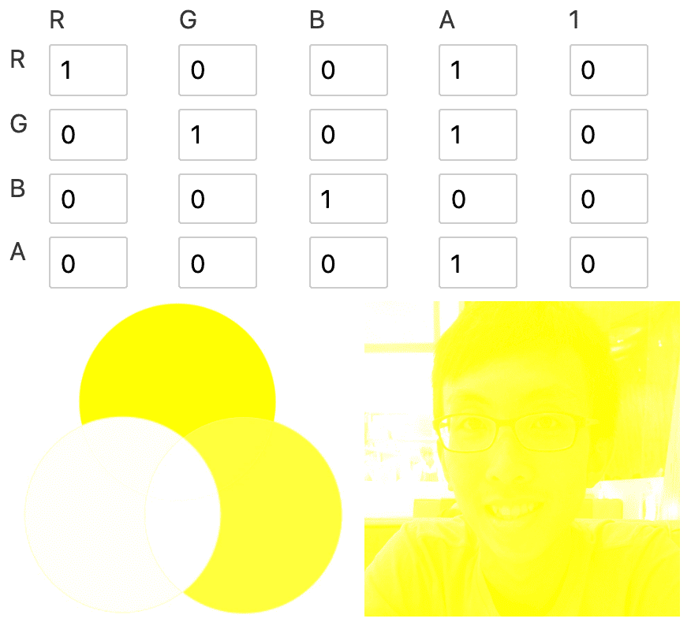
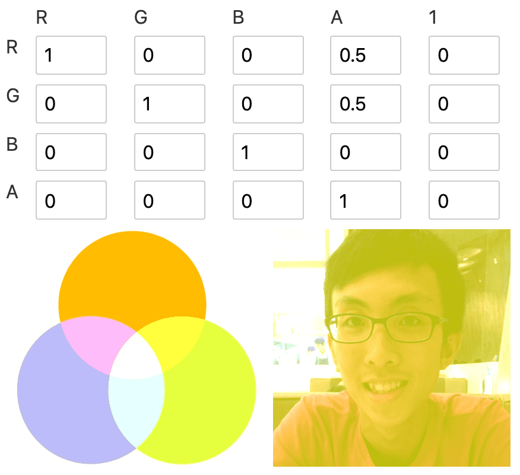
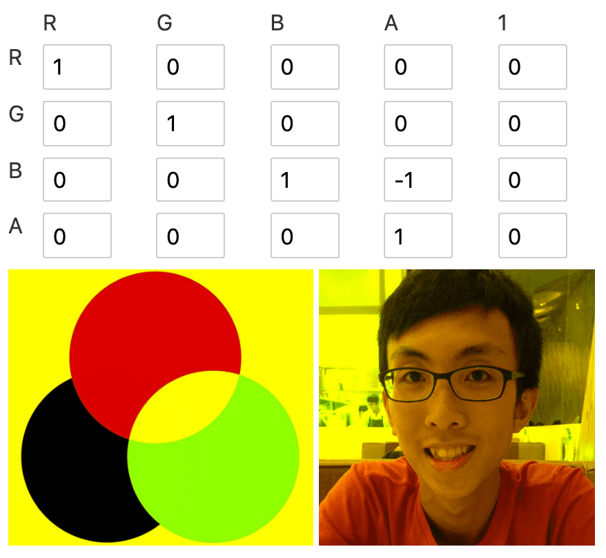
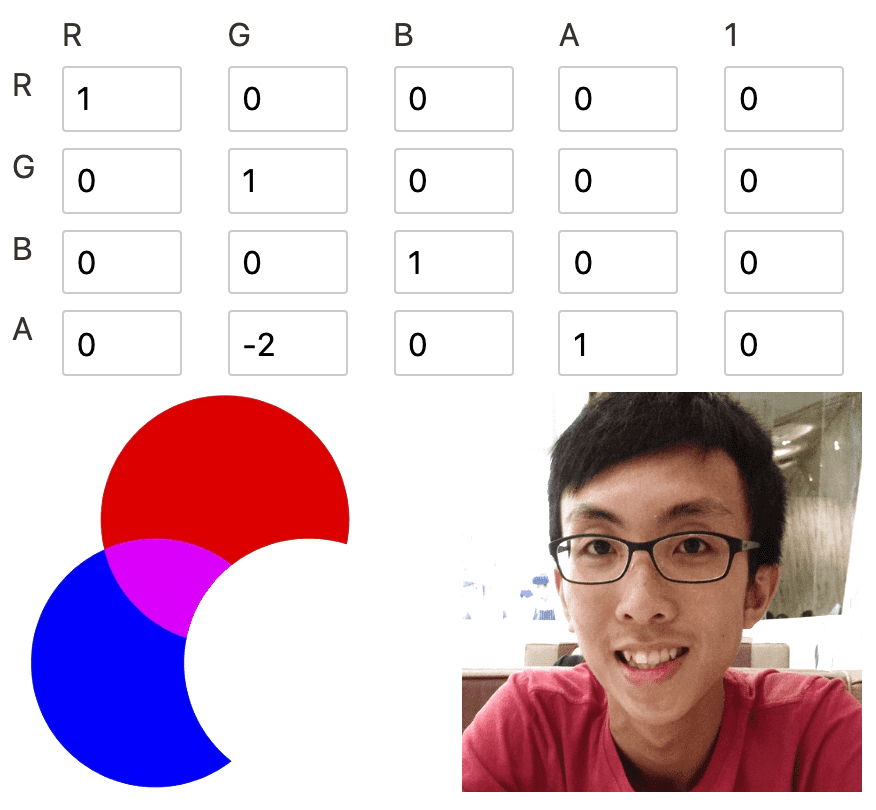
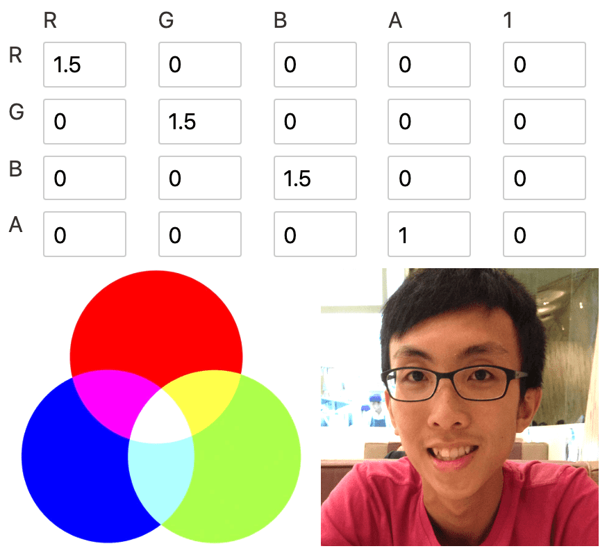
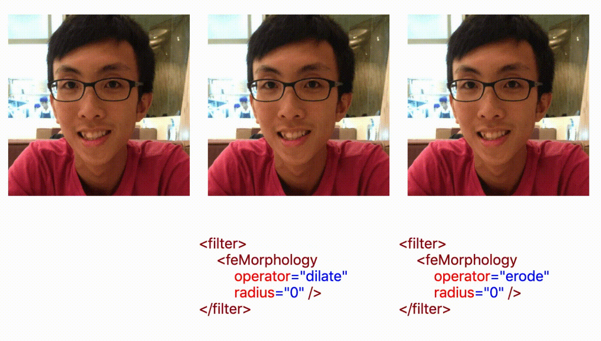
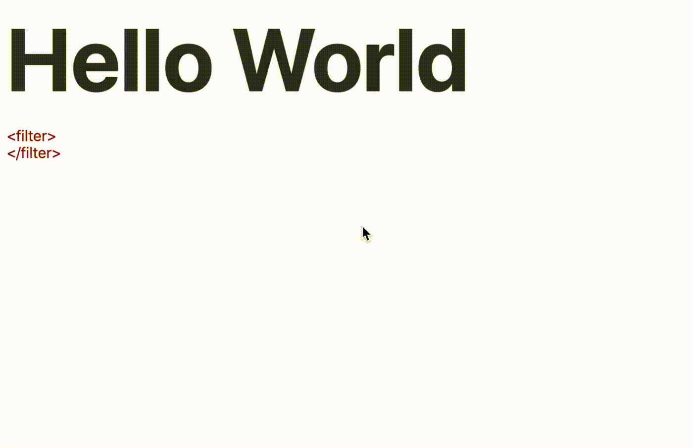
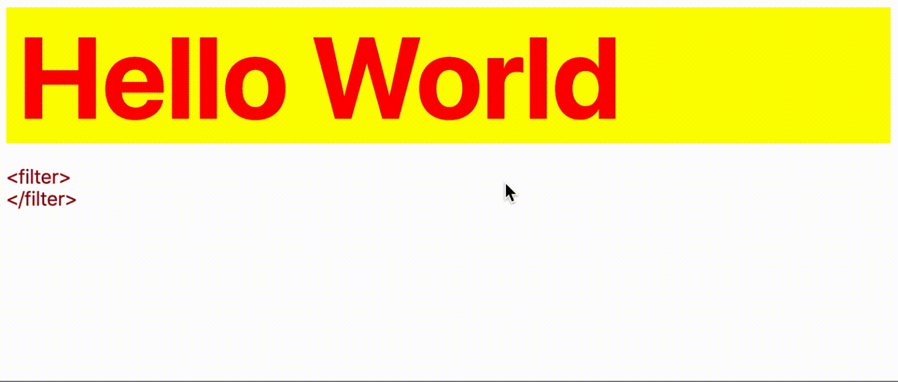

SVG Filters 101
[ Source ]
- defined in
<filter>element - define a series of one or more filter primitives
- 1 filter primitive performs 1 single fundamental graphic operation on one or more inputs
filter primitives
- filter primitives named start with
fe, short for "filter effect" - filter primitives take 1-2 inputs and output 1 result
inandin2attribute for input,resultattribute for output- input takes in result,
SourceGraphicandSourceAlpha
<svg>
<filter id="my-filter">
<!-- take in 1 input `in` -->
<feGaussianBlur in="INPUT_NAME" />
<!-- take in 2 inputs `in` and `in2` -->
<feComposite in="INPUT_NAME_1" in2="INPUT_NAME_2" />
<!-- `result` defines the result name,
which can be passed in as input for the next filter -->
<feGaussianBlur result="OUTPUT_1" />
<feGaussianBlur in="OUTPUT_1" />
<!-- use the source as input for the filter primitive -->
<!-- apply filter on the source element -->
<feGaussianBlur in="SourceGraphic" />
<!-- apply filter on the alpha channel of the source element,
the silhouette of the source -->
<feGaussianBlur in="SourceAlpha" />
</filter>
</svg>Filter region
- filter region is based on the bounding box of the element
- filter result beyond filter region will be clipped off
- default filter region extends 10% the width and height of bounding box in all 4 directions
<!-- x, y, width, height sets the filter region -->
<filter
x="-10%" y="-10%" width="120%" height="120%"
filterUnits="objectBoundingBox">
<!-- filter primitives here -->
</filter>- use
<feFlood>to figure out the filter region
<filter>
<feFlood
flood-color="#EB0066" flood-opacity="0.5"
result="flood"></feFlood>
<feMerge>
<feMergeNode in="SourceGraphic" />
<feMergeNode in="flood" />
</feMerge>
</filter>Create a drop shadow
- Blur the silhouette of the layer
<filter id="my-filter">
<feGaussianBlur
in="SourceAlpha" stdDeviation="10" result="DROP" />
</filter>- Composite the blur layer with a solid color layer to create a colored blur
- Learn compositing + blending in https://www.sarasoueidan.com/blog/compositing-and-blending-in-css/
<filter id="my-filter">
<feGaussianBlur in="SourceAlpha" stdDeviation="10" result="DROP"></feGaussianBlur>
<feFlood flood-color="#EB0066" result="COLOR" />
<feComposite in="COLOR" in2="DROP" operator="in" result="SHADOW" />
</filter>- Shift the shadow bottom-right with
<feOffset>
<filter id="my-filter">
<feGaussianBlur in="SourceAlpha" stdDeviation="10" result="DROP"></feGaussianBlur>
<feFlood flood-color="#EB0066" result="COLOR" />
<feComposite in="COLOR" in2="DROP" operator="in" result="SHADOW" />
<feOffset in="SHADOW" dx="10" dy="10" result="DROPSHADOW" />
</filter>
- Combine the shadow with the original image
- layer merge in order of declaration, latter layer stacks on top of previous layer
<filter id="my-filter">
<feGaussianBlur in="SourceAlpha" stdDeviation="10" result="DROP"></feGaussianBlur>
<feFlood flood-color="#EB0066" result="COLOR" />
<feComposite in="COLOR" in2="DROP" operator="in" result="SHADOW" />
<feOffset in="SHADOW" dx="10" dy="10" result="DROPSHADOW" />
<feMerge>
<feMergeNode in="DROPSHADOW" />
<feMergeNode in="SourceGraphic" />
</feMerge>
</filter>
Finessing feColorMatrix
[ Source ]
<filter id="linear">
<feColorMatrix
type="matrix"
values="R 0 0 0 0
0 G 0 0 0
0 0 B 0 0
0 0 0 A 0 "/>
</filter>/* R G B A 1 */
1 0 0 0 0 // R = 1*R + 0*G + 0*B + 0*A + 0
0 1 0 0 0 // G = 0*R + 1*G + 0*B + 0*A + 0
0 0 1 0 0 // B = 0*R + 0*G + 1*B + 0*A + 0
0 0 0 1 0 // A = 0*R + 0*G + 0*B + 1*A + 01. Colorizing

- Removing other color to colorise image into the remaining color
- colorise red -> remove blue & green

- colorise yellow -> remove blue (red + green = yellow)

2. Alpha values
add opacity level to the red channel
- any red remaining red
- green -> yellow (red + green = yellow)
- blue -> magenta (red + blue = magenta)

hard yellow filter
 have a value some where between 0-1 to see the mixture in the shadow


- negative value could offset the channel by the amount of opacity
 - the following 2 color matrix is identical
<filter>
<feColorMatrix
type="matrix"
values="1 0 0 0 0
0 1 0 0 0
0 0 1 -1 0
0 0 0 1 0 "/>
</filter>
<filter>
<feColorMatrix
type="matrix"
values="1 0 0 0 0
0 1 0 0 0
0 0 0 0 0
0 0 0 1 0 "/>
</filter>3. Blowing out channels
- turn 1 color to white
- set the alpha channel to
-2
4. Change color
- No more green, any green looks like magenta now. (luminosity of green is lost)


5. Lighten or darken
- increase intensity to lighten, decrease to darken
 

6. Grayscale
- make sure red, green, blue have the same value


Outline Text with <feMorphology>
[ Source ]
- 🖼 image size gets smaller when
erode, larger whendilate - 🖼 image looks like painted with large brush 🖌
- 📝
erodesets each pixel to the darkest / most transparent neighbor - 📝
dilatesets each pixel to the brightest / least transparent neighbor
<filter>
<feMorphology
in=".." result=".."
operator="dilate || erode" radius="" />
</filter>

Radius: 0
REPL to see effect with different radius.
Adding Colored Outline to Text with <feMorphology />
1️⃣ expand the text with <feMorphology operator="dilate" />
2️⃣ colorize via <feFlood> with solid color and <feComposite />
3️⃣ merge the expanded colored text with the original text
<h1 style="filter: url(#outline)">Hello World</h1>
<svg>
<filter id="outline">
<feMorphology result="THICK" operator="dilate" radius="4" />
<feFlood flood-color="#32DFEC" flood-opacity="1" result="COLOR" />
<feComposite in="COLOR" in2="THICK" operator="in" result="OUTLINE" />
<feMerge>
<feMergeNode in="OUTLINE" />
<feMergeNode in="SourceGraphic" />
</feMerge>
</filter>
</svg>
REPL to visualise <feMorphology>
Knockout text with <feMorphology />
1️⃣ expand the text with <feMorphology operator="dilate" />
2️⃣ composite with the source with <feComposite /> using out operator
<h1 style="filter: url(#outline)">Hello World</h1>
<svg>
<filter id="outline">
<feMorphology result="THICK" operator="dilate" radius="4" />
<feComposite in="THICK" in2="SourceGraphic" operator="out" />
</filter>
</svg>
Hello World
REPL to visualise the build up the knock-out text.